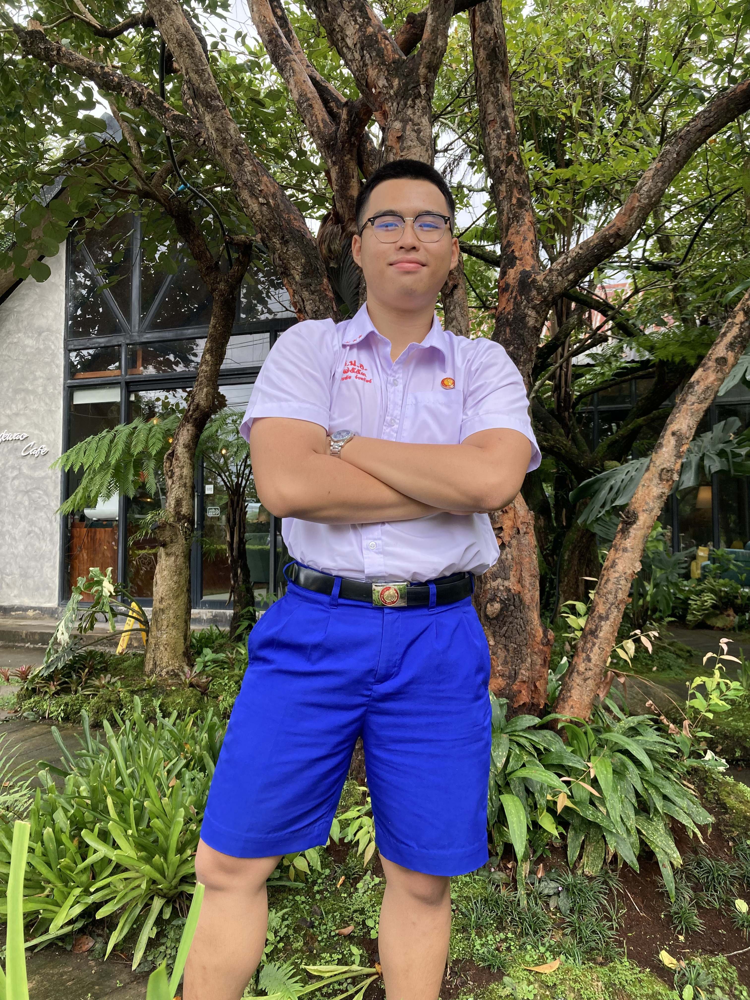
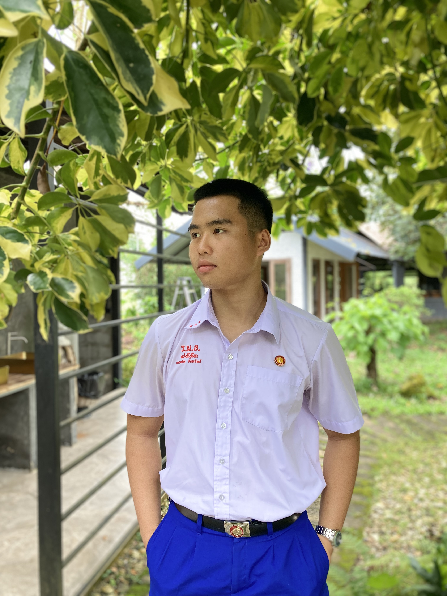

ความฝันที่จะเป็น “โปรแกรมเมอร์” ก็ไม่เคยเปลี่ยนแปลงเลยครับ จุดเริ่มต้นของความสนใจในเทคโนโลยีเกิดขึ้นตั้งแต่สมัยอนุบาล คุณลุงซื้อแท็บเล็ตให้ผม ตามประสาเด็ก ผมก็ใช้มันเล่นเกมอยู่เสมอ และยิ่งเล่นก็ยิ่งหลงใหลในโลกของเทคโนโลยีมากขึ้น ช่วงประถมปลาย ผมเริ่มมีความคิดว่า “อยากสร้างเกมของตัวเองให้ได้สักวันหนึ่ง” ผมยังจำได้ดีว่า ครูเคยถามว่าโตขึ้นอยากทำอาชีพอะไร และผมตอบโดยไม่ต้องคิดเลยว่า “อยากเป็นโปรแกรมเมอร์ครับ” ช่วงประถมปลาย ผมได้เข้าร่วมการแข่งขันทักษะวิชาการด้านการสร้างเกม ซึ่งเป็นครั้งแรกที่ผมมีโอกาสได้ลองลงมือทำจริง แม้จะยังไม่มีพื้นฐานและไม่มีใครคอยชี้แนะ ผลงานจึงออกมาได้ไม่ค่อยดี แต่เหตุการณ์นั้นกลับยิ่งตอกย้ำว่าผม “อยากเข้าใจสิ่งที่อยู่เบื้องหลังเกม” ให้มากกว่านี้ เมื่อเข้าสู่ช่วงมัธยมต้น ความสนใจของผมเริ่มขยายจากเกมมาสู่การสร้างเว็บไซต์ ผมเริ่มศึกษาการเขียนโค้ดจาก YouTube และเว็บไซต์ต่าง ๆ ด้วยตัวเอง จนสามารถสร้างหน้าเว็บง่าย ๆ ได้ด้วยความพยายามของผม และมีโอกาสได้เข้าร่วมการแข่งขันสร้างเว็บไซต์ในระดับโรงเรียน แม้ผลลัพธ์จะยังไม่ดีพอ แต่ผมได้เรียนรู้ว่าความพยายามและการลงมือทำ คือสิ่งที่ทำให้ผมเติบโต
พอขึ้นมัธยมปลาย ผมมีโอกาสได้เข้าร่วมการแข่งขันเขียนโปรแกรมในงานวิทยาศาสตร์ของมหาวิทยาลัยเชียงใหม่ ประจำปี 2568 ณ คณะวิทยาศาสตร์ สาขาวิทยาการคอมพิวเตอร์ การได้สัมผัสบรรยากาศของมหาวิทยาลัย และเห็นผลงานของรุ่นพี่หลายคน ทำให้ผมรู้ว่าผมอยากพัฒนาตัวเองให้ไปถึงจุดนั้นให้ได้
เมื่อเข้าสู่ช่วงมัธยมต้น ความสนใจของผมเริ่มขยายจากเกมมาสู่การสร้างเว็บไซต์ ผมเริ่มศึกษาการเขียนโค้ดจาก YouTube และเว็บไซต์ต่าง ๆ ด้วยตัวเอง จนสามารถสร้างหน้าเว็บง่าย ๆ ได้จากความพยายามของผมเอง และมีโอกาสได้เข้าร่วมการแข่งขันสร้างเว็บไซต์ในระดับโรงเรียน แม้ผลลัพธ์จะยังไม่ดีพอ แต่ผมได้เรียนรู้ว่า “ความพยายามและการลงมือทำ” คือสิ่งที่สำคัญที่สุดในการเติบโต
ต่อมาในช่วงมัธยมปลาย ผมมีโอกาสได้เข้าร่วมการแข่งขันเขียนโปรแกรมในงานวิทยาศาสตร์ของมหาวิทยาลัยเชียงใหม่ ประจำปี 2568 ณ คณะวิทยาศาสตร์ สาขาวิทยาการคอมพิวเตอร์ การได้สัมผัสบรรยากาศของมหาวิทยาลัย และเห็นผลงานของรุ่นพี่หลายคน ทำให้ผมรู้ว่าผมอยากพัฒนาตัวเองให้ไปถึงระดับนั้นให้ได้
อีกเหตุการณ์หนึ่งที่เปลี่ยนมุมมองของผมเกิดขึ้นในวันที่ 21 กันยายน 2568 ซึ่งเป็นวันสุดท้ายของการเรียนในโครงการ Entaneer Academy ตอนเช้านั้น ผมไปทานอาหารกับน้าที่ร้านเล็ก ๆ แห่งหนึ่งในอำเภอสารภี จังหวัดลำพูน สิ่งที่ทำให้ผมประหลาดใจคือ ร้านเล็ก ๆ ที่มีโต๊ะเพียงไม่กี่โต๊ะ กลับมี “ระบบสั่งอาหารแบบ Self-Ordering” ให้ลูกค้าใช้ ผมรู้สึกทึ่งมากครับ เพราะไม่คิดว่าจะเห็นเทคโนโลยีแบบนี้ในร้านชุมชน มันทำให้ผมเห็นว่า “เทคโนโลยีไม่ได้อยู่ไกลตัวเลย” และสามารถยกระดับคุณภาพชีวิตของคนในพื้นที่ได้จริง ๆ
ชุมชนที่ผมอาศัยอยู่ยังห่างจากตัวเมืองพอสมควร และสิ่งอำนวยความสะดวกยังไม่มากนัก หลายร้านเพิ่งเริ่มนำเทคโนโลยีเข้ามาใช้ ผมจึงอยากเป็นส่วนหนึ่งในการผลักดันให้ชุมชนของผมมีความทันสมัยมากขึ้น ด้วยระบบที่ช่วยอำนวยความสะดวกให้ทั้งผู้ประกอบการและลูกค้า เช่น ระบบ Self-Ordering หรือระบบอัตโนมัติอื่น ๆ ที่ใช้ “หุ่นยนต์และปัญญาประดิษฐ์” เป็นหัวใจสำคัญ ผมเชื่อว่าเทคโนโลยีเหล่านี้จะกลายเป็นสิ่งที่ร้านค้าหรือธุรกิจในอนาคตไม่อาจขาดได้ ไม่ว่าจะเป็นร้านอาหารตามสั่ง ร้านก๋วยเตี๋ยว หรือแม้แต่ร้านชานมไข่มุก
จากประสบการณ์ทั้งหมด ผมได้เรียนรู้ว่า “ความหลงใหลเพียงอย่างเดียวไม่พอ ถ้าขาดแนวทางที่ถูกต้อง” ตลอดเวลาที่ผ่านมา ผมพยายามศึกษาด้วยตัวเองเสมอ แต่ผมรู้ว่าถ้าต้องการพัฒนาตัวเองให้ไปไกลกว่านี้ ผมจำเป็นต้องมีพื้นฐานทางด้าน วิศวกรรม คณิตศาสตร์ ฟิสิกส์ ระบบควบคุม และปัญญาประดิษฐ์ ที่แข็งแรง เพื่อเข้าใจเทคโนโลยีในระดับที่สามารถสร้างสิ่งใหม่ได้จริง

นั่นคือเหตุผลที่ผมตัดสินใจเลือก “สาขาวิศวกรรมหุ่นยนต์และปัญญาประดิษฐ์ คณะวิศวกรรมศาสตร์ มหาวิทยาลัยเชียงใหม่” ครับ ผมเชื่อมั่นว่าสาขานี้จะไม่เพียงสอนให้ผมเขียนโปรแกรมหรือประกอบวงจรได้เท่านั้น แต่ยังจะสอนให้ผมคิดอย่างเป็นระบบ เข้าใจกลไกของหุ่นยนต์ การทำงานของ AI และการเชื่อมโยงเทคโนโลยีเข้ากับชีวิตจริง เพื่อสร้างนวัตกรรมที่ช่วยพัฒนาสังคมไทยได้อย่างยั่งยืน
ผมอาจไม่ได้เป็นเด็กที่เก่งที่สุด หรือมีโอกาสเรียนเขียนโค้ดตั้งแต่เล็ก แต่ผมมี “ความมุ่งมั่นที่ไม่เคยหมดไป” ตั้งแต่วันที่ได้รู้จักคอมพิวเตอร์จนถึงวันนี้ ทุกก้าวที่ผมเดินมาล้วนเกิดจากความพยายามด้วยตัวเอง และผมเชื่อว่าการได้เรียนรู้ในสาขาวิศวกรรมหุ่นยนต์และปัญญาประดิษฐ์ จะเป็นก้าวสำคัญที่พาผมไปสู่ความฝัน — การใช้เทคโนโลยีเพื่อยกระดับชีวิตของผู้คนรอบตัว
ผมตั้งใจว่าจะนำความรู้จากที่นี่ไปต่อยอด เพื่อพัฒนาชุมชนของผมให้ทันสมัยขึ้นในแบบที่ทุกคนสามารถเข้าถึงเทคโนโลยีได้ง่ายขึ้น และในอนาคต ผมอยากเป็นหนึ่งในคนไทยที่ใช้ความรู้ด้าน หุ่นยนต์และปัญญาประดิษฐ์ สร้างประโยชน์ให้กับสังคม ประเทศ และโลกใบนี้ครับ